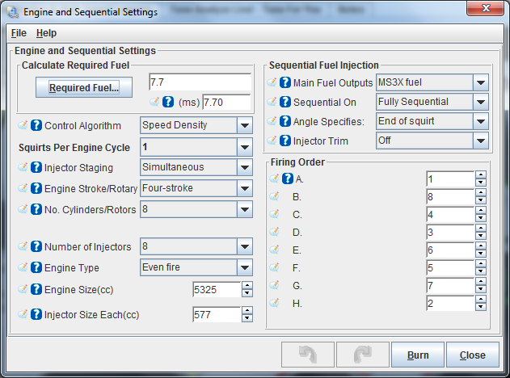
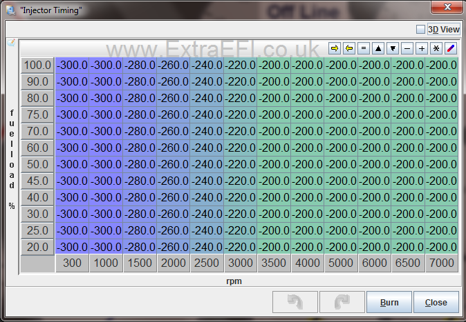

I highly recommend getting your engine running and tuned without messing with the sequential fuel settings first, then try this out, as its very hard to tune this when the fuel table isn't correct!!
Note: Your MS3 ECU will need extra hardware to do some of the following. An MS3X board will be needed in 99% of the setups to run Fully Sequential.
A suitable Cam signal will also be needed for Fully Sequential, but NOT for Semi Sequential!
Before you start this please read the Sequential Fueling page here first, as it has important information on it that you need to read and understand!
OK, now hopefully you know what sequential fueling is all about, so we can move onto the settings using Tuner Studio:
Start by looking under Basic/Load Settings - Engine and Seq Settings

Main Fuel Outputs:
Std Fuel means the 2 on-board outputs, which are for Semi-Seq on a 4cy or Option 1 on a 6 or 8cy (Lower or Single db37 pin plug on ECU). See Below.
MS3X if you are using the MS3X board to run an engine Fully Sequential (The MS3X card is the top db37 connector on the ECU).
Sequential On:
Here you can turn on the sequential function, options are Off, Semi or Fully Seq, your selection depends on how you've wired your ECU and how it was configured to run. (see below for Semi - Full)
Angle Specifies:
This is when you want the fuel to be added in relationship to the angle you have set. Usually this is set to End-of-Pulse as thats easiest to work out with varying PW's, but you can have it so the fuel starts at a certain angle or that the fueling PW ends at the set angle (Start-of-pulse), or even so the PW is timed for being in the middle of the angle (Mid-Pulse).
Injector Trim:
This should be the final tuning stage if you have EGT and really know what your doing. It allows you to tune the fueling for each injector with its own 16x16 trim table. The tables allow a +-12.4% adjustment from the main VE table. Select this to OFF untill you have tuned the ECU, then you will need to see the EGT Tuning Page for more information on this.
Firing Order:
This is to set which cylinders are connected to which Injector Bank Output. This MUST be your firing order, as the MS ECU simply fires A, B, C, D, E.... The settings here are for use in the injector fuel trim pages, so when you select Cy1, Cy2, etc, you open the correct Injector banks trim page. (e.g. Opening the page Cy#8 Trim you would adjust Injector Bank B fuel) Example shows a RV8. |
|
Timing Table for the Fueling Angle when selected in the above settings:
This allows for adjustments to compensate for air speed and load.
Note: Do NOT jump too far in one go, limit the difference between sites to 100 at max to avoid stumbles.

General opinion is that the fuel needs to be delivered earlier as RPM increases, due to intake air and engine speed. A rule of thumb is 40deg for every increase of 1000rpm up to around 4000-5000rpm. At high RPM the PW's are usually so long that timing is no longer critical and air speed is also much higher, so any gains are minimal as rpm increases.
There are several methods of tuning the angle for the optimum setting, none of them will beat a rolling road tune. If you don't want to use a rolling road then several people tune at idle for the max AFR reading (richest point) where the theory is that this will be the angle that max mixture of the air/fuel occures. I have tried this method and couldn't really notice any change in AFR. Another method is to tune for the smoothest idle, I found -250 to -300 worked best for my RV8 on the EFI intake. I then adjusted the rest of the table so that for every increase of 1000rpm the firing angle was +40 deg earlier up to 3500rpm. (+20deg / 500RPM)
Hardware Setup
Semi-Sequential:
(No Cam signal Needed)

4 Cylinder Semi-Seq:
The MS3(X) ECU fires each pair of cylinders with half the required amount of fuel every crank rotation, remembering that a 4 stroke engine only needs fuel once per two crank rotations. This needs the 4 Injector banks wired individually in the firing order of the engine.
So a firing order of 1,3,4,2 connect Injector BankA to cylinders 1, Injector Bank B to cylinders 3, Injector Bank C to cy 4 and D to cy 2.
The MS3X setup will fire banks A and C together and B+D together.

6 Cylinder Semi Seq:
The MS3(X) ECU fires each pair of cylinders with half the required amount of fuel every crank rotation, giving you three banks of injectors that can be fired in pairs at a specific crank angle during their stroke (once per crank rev / twice per engine cycle).
Firing order 1 - 5 - 3 - 6 - 2 - 4 would be wired BankA to cy 1, Bank B to cy 5, Bank C to cy 3, Bank D to cy 6, E to cy 2 and F to cy 4
The MS3X setup will fire banks A+D together, B+E together and C+F.
8 Cylinder Semi Seq:
The MS3(X) ECU fires each pair of cylinders with half the required amount of fuel every crank rotation, giving you four banks of injectors that can be fired in pairs at a specific crank angle during their stroke (once per crank rev / twice per engine cycle).
Firing order 1,8,4,3,6,5,7,2 would be wired BankA to cy 1, Bank B to cy 8, Bank C to cy 4, Bank D to cy 3, E to cy 6, F to cy 5, G to 7 and H to cy2
The MS3X setup will fire banks A+E together, B+F together, C+G together and D+H.
Fully Sequential:
(Cam Sensor needed)
This allows you to fire all of the required fuel for each independant cylinder at a specific time during the cycle of the piston. This means wiring each injector back to the MS ECU so that the controller can fire them singularly at a specified time witin the engine cycle. This setup would need a crank signal (EDIS 12 pinned modules and distributor setups won't work) as well as a cam signal for the ECU to work out which cylinder is on it's compression stroke, etc. This can control up to a 8cy engine on MS3 using the MS3X board inside it.

See the EGT Tuning Page for more on this subject. |